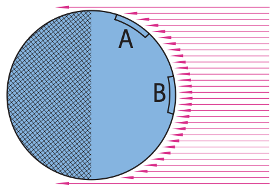

Power and Electrical Energy
Mathematical idea: The relationships $P=IV$ and $E=Pt$ connect circuit conditions to energy-transfer rate and total energy use.
You will distinguish fast electrical signals from slow electron drift, compare device power and energy use, and use textbook solar diagrams to test efficiency and renewable-energy claims.
Learning Target
Students will explain electric power and electrical energy use in devices, homes, and energy systems.
I can statements
- I can define electric power as the rate at which electrical energy is transferred.
- I can calculate power using voltage and current.
- I can calculate electrical energy use from power and time.
- I can compare energy use of household devices.
- I can explain why high-power devices transfer energy faster.
- I can evaluate claims about efficient lighting, solar power, and electrical energy use.
Vocabulary
These are words you will see in this section. Do not define them yet.
- direct current
- alternating current
- electric field
- drift velocity
- electric power
- watt
- electrical energy
- kilowatt-hour
- efficiency
- solar power
- photovoltaic cell
- solar constant
Use the preview activity to decide which words you already know, recognize, or do not know yet. Watch for these words in bold when they are first introduced or defined in the reading.
Preview: Skim Before You Read
Directions
Before reading closely, skim the vocabulary list and the section. Look at titles, headings, bold words, pictures, captions, diagrams, tables, and formulas. Do not try to understand everything yet. Your job is to notice what already looks familiar and make predictions about what this section may explain.
Step 1 — Sort the vocabulary. Write each vocabulary word in the column that best matches what you know right now. You may move a word later.
| Know for sure | Recognize | Don’t know yet |
|---|---|---|
Step 2 — Skim the section. Record what catches your attention before you read closely.
| What I noticed | |
|---|---|
| What I predict | |
| What I wonder |
Content: Read, Look, Annotate, Apply
Directions
Read in short chunks. Annotate the prose and the figures together: underline evidence, circle or highlight bold vocabulary, label arrows or measured features, connect a sentence to an image, and write short questions or connections in the margins.
Reading 1: How Circuits Transfer Energy
Electric current can have different motion patterns. In direct current (dc), charges have a net motion in one direction. In alternating current (ac), the motion repeatedly reverses. Batteries normally supply dc, while household outlets supply ac.
The source emphasizes that the quick response of a circuit is not caused by one electron racing from the source to the device. When a circuit is completed, an electric field is established through the conducting path very rapidly, and conduction electrons throughout the circuit respond.
In a dc wire, electrons still move randomly because of thermal motion, but the electric field adds a tiny net motion called drift velocity. That average drift can be extremely slow even while the lamp responds almost immediately.
This resolves a common misconception: utilities do not deliver fresh electrons to your house for each device. The conducting material already contains electrons. What the source transfers to a lamp or motor is energy, carried through the electrical system while local charges respond to the field.

Image read: On the dc graph, mark the direction that stays unchanged. On the ac graph, mark where current reverses direction.

Image read: Trace the field through the connected wire and note how completing the circuit changes the conducting path.

Image read: Distinguish the large random zigzag motion from the small overall drift direction.
Stop and Discuss
- How can a lamp respond almost immediately even though electron drift velocity is slow?
- What is the difference between dc and ac in terms of charge motion?
- Correct the claim “the power company sends electrons from the plant into my lamp.”
Example 1: Fast Signal, Slow Charges
A switch closes a long circuit and a distant lamp lights almost immediately.
- Explain what travels through the circuit rapidly enough to establish the response.
- Explain what the individual conduction electrons do instead of racing the full distance.
You Try It 1: AC Does Not Mean No Current
In a household ac circuit, electrons oscillate back and forth rather than migrating steadily across town.
- Explain why this can still be an electric current.
- State what is transferred to an operating appliance even though the electrons have no large net migration.
Reading 2: Electric Power: How Fast Energy Transfers
Electric power is the rate at which electrical energy is transferred or converted. A motor transfers electrical energy into mechanical motion, a heater transfers it mostly into thermal energy, and a lamp produces both light and heat.
The SI unit of power is the watt. A higher-power device transfers more energy each second while it is operating. Power is not the same thing as the total energy used; time matters for that comparison.
In a circuit, power depends on both current and voltage. A device that has substantial current while operating across a substantial voltage transfers energy rapidly. The relationship $P=IV$ quantifies that rate for the simple circuit situations in this unit.
Power ratings can also support claims about efficiency. The textbook notes that a lower-power compact fluorescent lamp can produce about the same visible light as a much higher-power incandescent lamp. Watts measure energy-transfer rate, not brightness by itself.
Stop and Discuss
- Explain the difference between “power” and “energy” without using formulas.
- Why can two lamps with different power ratings produce similar useful light output?
- What does a 60-W rating tell you about rate of energy transfer?
$P$ is electric power in watts (W), $I$ is current in amperes (A), and $V$ is voltage in volts (V).
Interpret the result as a rate of energy transfer. A larger power means more energy is transferred each second.
Example 2: Device Power
A device operates at 12 V and draws 2 A.
- Use $P=IV$ to calculate the power.
- Interpret the answer as an energy-transfer rate.
You Try It 2: Charger Power
A device operates at 5 V and draws 1.5 A.
- Calculate the power.
- If another device transfers the same useful output at lower power, what efficiency claim might be reasonable?
Reading 3: Electrical Energy Depends on Power and Time
The total electrical energy transferred by a device depends on both how rapidly it transfers energy and how long it operates. A high-power device used briefly can transfer less total energy than a low-power device left on for many hours.
The relationship $E=Pt$ captures that idea. When power is constant, doubling operating time doubles energy use. When time is the same, a higher-power device transfers more energy.
For household energy, a common unit is the kilowatt-hour. It combines a power rating in kilowatts with operating time in hours. The source uses this to compare operating cost and explains why a refrigerator can use substantial energy over a month even if its instantaneous power is moderate.
Energy-use claims should therefore include both rating and time. Saying “the 100-W device always uses more energy than the 25-W device” is incomplete unless both are used for the same amount of time.
Stop and Discuss
- Why is power rating alone not enough to determine which device uses more energy over a day?
- What two pieces of information are needed to compare electrical energy use with $E=Pt$?
- Explain why a low-power device can still use substantial energy if it operates for a long time.
$E$ is electrical energy, $P$ is power, and $t$ is operating time. Keep the time unit consistent with the energy unit you want to report.
For comparisons, focus first on the pattern: energy use grows with both power and time.
Example 3: Power Times Time
A 60-W lamp operates for 2 h.
- Use $E=Pt$ to determine the energy use in watt-hours.
- Explain how the result would change if the operating time doubled.
You Try It 3: Lower Power, Longer Time
A 25-W lamp operates for 4 h.
- Determine the energy use in watt-hours.
- Compare it with the Example and explain why lower power does not automatically mean lower total energy in every situation.
Reading 4: Solar Power and Evidence-Based Energy Claims
The Sun supplies an enormous radiant-energy input to Earth. The solar constant describes the rate received at the top of the atmosphere on a surface perpendicular to the Sun’s rays: about 1.4 kW per square meter.
Actual solar input at the ground varies with atmosphere, time of day, season, and especially the angle at which rays strike a surface. When the same incoming energy is spread over a larger area, the available energy per unit area is lower. The flashlight and Earth diagrams make this geometric effect visible.
Solar power describes the rate at which solar energy is received or made available for use. A photovoltaic cell converts sunlight directly into electrical energy. Other solar systems can use sunlight for heating or use concentrated heat to help generate electricity.
When evaluating a solar-energy claim, separate power from total energy and include conditions. A panel’s useful output depends on available sunlight, orientation, area, conversion performance, and operating time. The textbook’s solar-water-heater image is a reminder that useful solar systems can also reduce energy demand by heating directly rather than first making electricity.

Image read: Mark the one-square-meter area and note why perpendicular orientation concentrates the incoming energy.

Image read: Compare the illuminated areas. Explain why the tilted beam spreads the same light over a larger area.

Image read: Count or compare the rays reaching regions A and B, then connect ray angle to energy per unit area.

Image read: Identify how the system uses incoming solar energy directly rather than first powering an electrical appliance.
Stop and Discuss
- Use the flashlight or Earth figure to explain why ray angle changes energy received per unit area.
- What is the difference between solar power and the total solar energy collected over a day?
- What evidence would you want before accepting a claim that one solar design will always outperform another?
Example 4: Evaluate a Solar Claim
A company compares two identical solar collectors but tests one facing the Sun directly and the other at a steep angle.
- Predict which receives more energy per unit area at that moment.
- Explain why the test would be unfair if the company claimed the result proved one material is always better.
You Try It 4: Power Is Not the Whole Story
Two lighting choices provide similar useful light. Lamp A is rated 100 W and Lamp B is rated 25 W.
- Which transfers electrical energy faster while operating?
- What additional information is needed to compare their total energy use over a week?
Vocabulary: Define the Terms
You have now seen these words in the reading, images, and practice. Use this table to consolidate the physics meaning of each term.
| Vocabulary term | Definition |
|---|---|
| direct current | Electric current in which charge has a net motion in one direction. |
| alternating current | Electric current in which charge motion repeatedly reverses direction. |
| electric field | A region in which electric charges experience electric force; in a circuit it provides the influence that drives conduction electrons. |
| drift velocity | The slow average net motion of conduction electrons through a conductor in response to an electric field. |
| electric power | The rate at which electrical energy is transferred or converted. |
| watt | The SI unit of power, equal to one joule per second. |
| electrical energy | Energy transferred by electrical interactions and converted into forms such as heat, light, or motion. |
| kilowatt-hour | A practical unit of electrical energy equal to using one kilowatt of power for one hour. |
| efficiency | How effectively an energy system produces the desired output compared with the input it uses. |
| solar power | The rate at which solar energy is received or converted for use. |
| photovoltaic cell | A device that converts radiant energy from sunlight directly into electrical energy. |
| solar constant | About 1.4 kW of solar power per square meter at the top of Earth’s atmosphere on a surface perpendicular to the Sun’s rays. |
Summary
- DC and AC describe different charge-motion patterns; a circuit can respond rapidly even though individual electron drift is slow.
- Electric power is the rate of electrical energy transfer and is calculated with $P=IV$.
- Electrical energy use depends on both power and operating time, modeled by $E=Pt$.
- A kilowatt-hour is a practical household energy unit; power alone does not determine total energy use.
- Efficiency claims compare useful output with input, and solar-energy claims must account for sunlight conditions, angle, area, and time.
Common Mistakes
| Mistake | Why it is tempting | Check instead |
|---|---|---|
| Electrons travel from the power plant to your appliance at nearly the speed of light. | The appliance responds almost immediately. | The field/signal establishes rapidly; electrons already in the conductor respond with slow drift or oscillation. |
| Watts measure how bright a lamp is. | Higher-power incandescent lamps are often brighter. | Watts measure energy-transfer rate; useful light also depends on efficiency. |
| The higher-power device always uses more total energy. | Power and energy are closely related. | Energy depends on both power and operating time. |
| A solar panel has the same output whenever sunlight is present. | The Sun is the same source. | Angle, atmosphere, area, time, and conversion performance all affect useful output. |
Which quantity is a rate: electric power or electrical energy?
A 40-W device runs for 3 h. Use $E=Pt$ to determine the energy in watt-hours and explain one reason another lower-power device could still use more energy in a day.
What is one thing you learned in this section? Explain it in at least one complete sentence.
What is one thing from this section you still need to understand or practice more? Be specific.